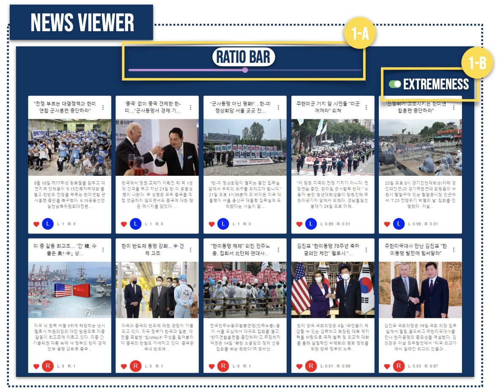
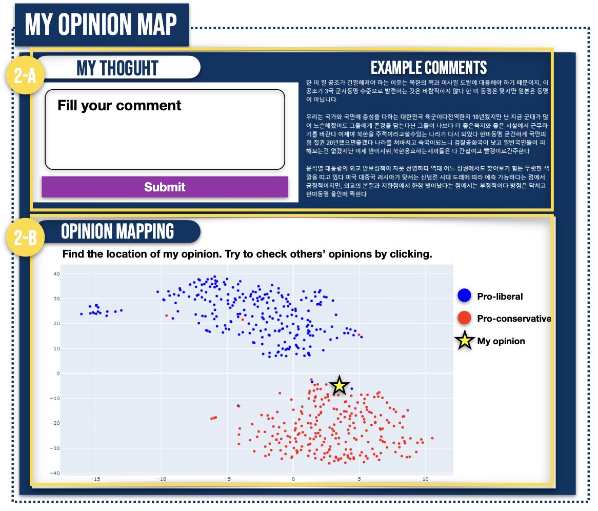

01프로젝트 한눈에 보기
핵심 구현
기사 성향 분석 결과와 댓글 임베딩을 News Viewer, Opinion Map의 사용자 인터페이스로 구현하고 사용자 실험으로 검증함
정치 성향 예측 모델을 웹서비스에 연계해 뉴스 관점과 의견 분포를 시각화하고, 94명의 3일간 이용 데이터를 통해 효과를 검증함.
02해결 방법
1FEATURE 1
News Viewer
기사의 정치 성향과 극단성을 시각적으로 보여주고, 노출 비율을 사용자가 직접 조정할 수 있게 함.
2FEATURE 2
My Opinion Map
댓글과 사용자 의견을 임베딩 공간에서 시각화해 자신의 위치와 전체 분포를 함께 볼 수 있게 함.
3FEATURE 3
실험 설계
6개 정치 이슈를 기반으로 3일간 서비스를 사용하게 하고, 사전·사후 설문으로 행동 변화를 측정함.


03구현 및 연구 방법
Model integration
예측 모델 결과를 UI 기능으로 연결
오프라인 예측 결과를 단순히 보여주는 데서 그치지 않고, Ratio Bar와 Toggle 상호작용으로 연결해 사용자가 직접 탐색할 수 있게 함.
Visualization
고차원 댓글 임베딩을 사용자 친화적으로 시각화
768차원 임베딩을 2차원으로 축소하고 상대 좌표를 정규화해, 의견 지형을 직관적으로 해석할 수 있도록 함.
Experimentation
실서비스 수준의 사용자 평가 설계
정치 뉴스 6개 주제와 사용 시간을 통제해 실제 사용 문맥에 가까운 실험 환경을 구축함.
Impact
서비스 사용 전후의 태도 변화를 수치화
단순 만족도가 아니라 반대 관점 뉴스 읽기 빈도, 의견 비교 행동 등 행동 지표 변화를 분석함.
04핵심 결과
반대 관점 뉴스 읽기 빈도
94명, 3일간 사용자 실험에서 관찰한 설문 점수 변화. 5점 척도.
막대 길이는 5점 만점 대비 비율(57.6% → 70.4%)이며, 표시 값은 실제 평균 점수임.
05개인 기여 및 논문
- News Viewer — KHAN의 성향·극단성 예측값을 Ratio Bar·Extremeness Toggle로 소비하도록 인터랙션 플로우 설계
- My Opinion Map — 768차원 댓글 임베딩을 t-SNE로 축소하고 진영 평균 분포 정규화를 적용한 시각화 알고리즘 직접 구현
- 94명 규모 사용자 실험 주도 및 EC Breaking Score 기반 시스템 효용성 정량 분석
연구 논문
현대오토에버 AI 데이터 서비스 개발 직무 연결
데이터 기반 사용자 서비스 개발
AI 분석 결과를 웹 화면에 시각화하고 사용자 행동 데이터를 수집하는 데이터 서비스 개발, 실사용 평가 및 개선 프로세스에 연결 가능.